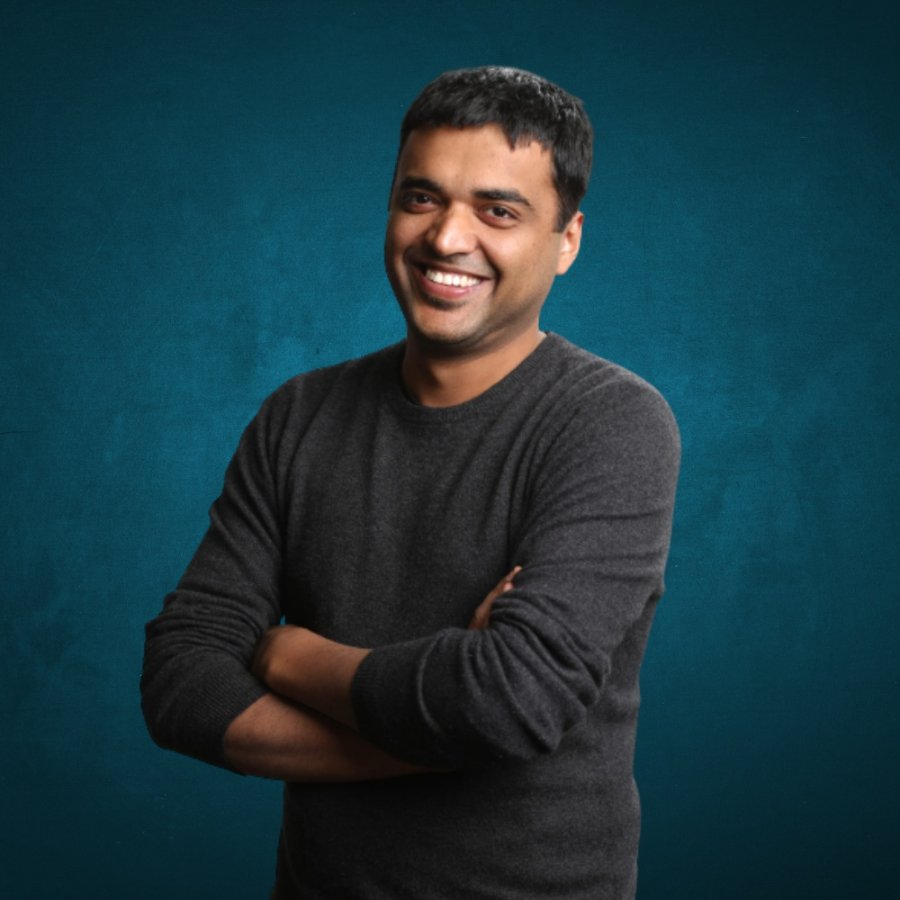

← Back to the founder directory

Deepinder Goyal
From a struggling schoolboy in Punjab and a Bain office lunch queue to the founder of Zomato, and now a builder of health and aviation ventures.
- Born
- 26 January 1983, Muktsar, Punjab, India
- Known for
- Founding Zomato (now part of Eternal)
- Industry
- Food tech, quick commerce, health tech, aviation
- Education
- Integrated M.Tech, Mathematics and Computing, IIT Delhi (2005)
Early life and IIT Delhi
Deepinder Goyal was born in 1983 in Muktsar, Punjab, into a modest middle-class family. By his own account he was a weak student in school and often near the bottom of his class, so his later results at IIT Delhi came as a surprise even to him. He graduated from IIT Delhi in 2005 with an Integrated M.Tech in Mathematics and Computing, according to the institute's own alumni records.
He has also said that he tried a food delivery idea right after graduating in 2005, but that it was too early for the market and it faded away. The idea stayed with him.
Bain and the menu cards
In January 2006 Deepinder joined Bain & Company in Gurgaon as a consultant. At the office, printed menus from nearby restaurants were kept at a shared desk and could not be taken away, so ordering lunch meant queuing. He and his colleague Pankaj Chaddah solved it by scanning the menus and putting them on the company intranet. Traffic from colleagues showed that a lot of people found it useful, which gave them the confidence to try it outside Bain.
From Foodiebay to Zomato
After collecting and scanning menus from restaurants across Delhi, they launched Foodiebay.com on 10 July 2008. They quit Bain to work on it full time around the end of 2009. In 2010 the brand was renamed Zomato, partly because the old name made it sound like a narrow food website. Info Edge, the company behind Naukri, became the first institutional investor, and the sources differ on the exact year and amount (reported as 2010 and about ₹4.7 crore, or August 2011 and US$1 million). Over the next few years Zomato spread across Indian cities and then abroad, and in 2015 it added online food delivery in India.
Going global, then coming back home
Between 2012 and 2015 Zomato expanded into many countries and in 2015 bought Urbanspoon from IAC, reported at US$50–60 million, which took it into the US and Australia. Most of this did not last. By late 2021 it had closed operations in the UK, US, Singapore and Lebanon, and the UAE food delivery business was shut in 2022. India became the real focus. In 2020 Zomato acquired Uber Eats' India business.
The IPO
Zomato listed on the BSE and NSE on 23 July 2021 after raising about ₹9,375 crore, and was valued at more than ₹1 lakh crore on the first day. It was one of the first large consumer-internet IPOs in India. The offer documents were open about the company's accumulated losses. On listing day Deepinder wrote to his staff that history is made in hindsight and that it was time to get back to work, which set a deliberately calm tone.
Blinkit and Eternal
In June 2022 Zomato agreed to acquire the quick-commerce company Blinkit in an all-stock deal worth about ₹4,447 crore (roughly US$568 million). In August 2023 it reported its first profitable quarter, a small profit of ₹2 crore. In 2025 the listed parent company was renamed Eternal, with Zomato, Blinkit, Hyperpure and District as its businesses, while the Zomato app kept its name. Eternal later reported consolidated adjusted revenue of about ₹17,680 crore for the March 2026 quarter, growth that was driven largely by Blinkit.
Stepping back from the CEO role
On 21 January 2026 Deepinder told shareholders he would step down as Group CEO. From 1 February 2026 Albinder Dhindsa, the Blinkit founder, took over as CEO, and Deepinder became Vice Chairman and a director. He said the change was about taking on higher-risk experiments that are hard to run inside a listed company, and that Eternal remained his life's work.
What he is building now
Since stepping back he has focused on new ventures: Continue, a health and longevity research effort that began as his personal health team; Temple, a wearable device that monitors the body's signals, which was reported in February 2026 to have raised US$54 million; and LAT Aerospace, an aviation startup co-founded with former Zomato executive Surobhi Das that is working on short take-off and landing aircraft for regional routes, with US$20 million of his own money invested. He is also an angel investor in companies such as Ultrahuman and Shiprocket, and he appeared as a panellist on Shark Tank India season 3. He is married to Grecia Muñoz.
Criticism
Zomato's rapid delivery model has drawn public debate over the pay and safety of gig workers. In early 2026 there were protests and a government response, after which the platforms agreed to drop “10-minute” delivery branding. Deepinder has defended the model, saying the system could not keep attracting people if it were fundamentally unfair. His international retreat is another part of the record, and he has been open about it.
Timeline
- 1983Born in Muktsar, Punjab.
- 2005Graduates from IIT Delhi in Mathematics and Computing.
- 2006Joins Bain & Company in Gurgaon.
- 2008Launches Foodiebay.com with Pankaj Chaddah.
- 2010The brand is renamed Zomato; Info Edge becomes the first institutional investor.
- 2015Buys Urbanspoon and launches food delivery in India.
- 2020Acquires Uber Eats' India business.
- 2021Zomato lists on the BSE and NSE; international operations begin to close.
- 2022Agrees to acquire Blinkit in an all-stock deal.
- 2023Reports its first profitable quarter.
- 2025The parent company is renamed Eternal.
- 2026Steps down as Group CEO and becomes Vice Chairman; backs Temple and LAT Aerospace.
Recognition
- IIT Delhi Distinguished Alumni Award (2020)
- Economic Times Startup of the Year (2011)
- Business Today Young Business Leader (2012)
- Fortune India 40 Under 40 (2020)
- Finalist, EY Entrepreneur of the Year (2023)
Leadership lessons
- Fix an everyday annoyance you live with. A lunch queue became a company.
- Prove demand on a small scale first. A hundred colleagues using a menu page was the early signal.
- Be honest in public. He admitted losses at the IPO and refused to call listing day historic.
- Be ready to retreat. Zomato closed most of its overseas operations and put its energy into India.
- Know when your job has changed. Running a large listed company and starting new things are different jobs.
Sources
Written from public information, including StartupTalky and IITian Vibes, with the January 2026 leadership change checked against TechCrunch and Outlook Business. The sources disagree on some details, such as the year and size of Info Edge's first investment and the year of the IIT Delhi alumni award (2018 in one, 2020 in the institute's own record), so the more primary or more specific source is followed where they differ. Several figures are as reported by the press and may have changed. Net worth is left out because estimates conflict.